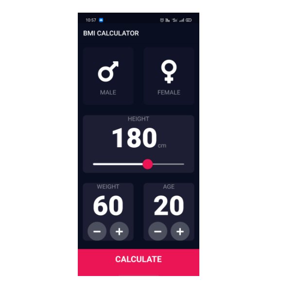

BMI Calculator
I made Body Mass Index Calculator inspired by the beautiful designs made by Ruben Vaalt in my first year of college. It will be a multi screen app with simple functionality but full-on custom styling.
Technologies:
- - Flutter
Laboratory Admin Dashboard
